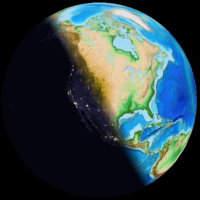

daynightglobe: Earth globe showing light pollution
on the dark side.
daynightglobe: Earth globe showing light pollution
on the dark side.
daynightglobe: Earth globe showing light pollution
on the dark side.
Uses a cloud layer and a clipping plane.
This is the one that's had the most development at this point.
You can start the Earth rotating, or speed it up, with the right arrow
key, slow it with left arrow and stop with down arrow.
I just wish I could figure out a way to blur the shadow.
 directional-light: a simple shadow on the
Earth.
This has a blurry shadow -- but it's actually too blurry and
I haven't found any way to change that, and there's no way to show
those dark-side lights.
directional-light: a simple shadow on the
Earth.
This has a blurry shadow -- but it's actually too blurry and
I haven't found any way to change that, and there's no way to show
those dark-side lights.

daynightglobe-preview: uses images generated by a Python script.
Sorry, can't preview this one in Github Pages, though it's more like
I'd like the other two to look. In Python I have control over the
two layers and the terminator between them, but it has to generate
a new image for each date and time, so it's not really practical for
a web app.
Source repository: github.com/akkana/threeworlds.